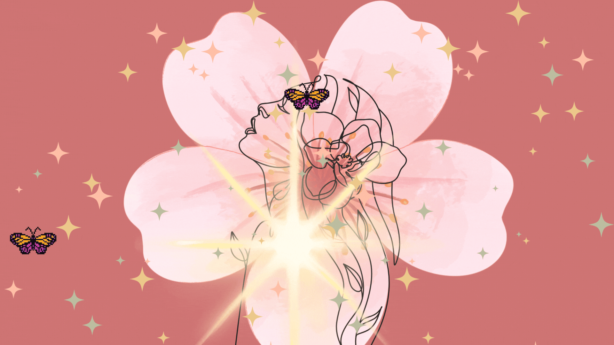
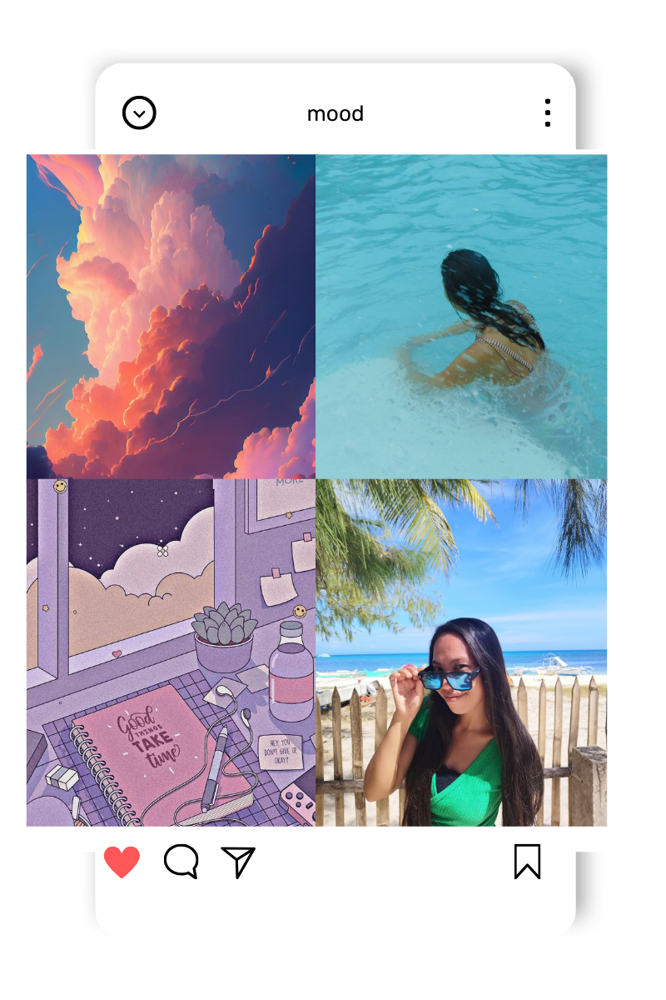

Courage isn't the absence of fear. It's acting in spite of it. May of you have the courage to live your truth. May you have the courage to live a life that you're proud of. -Mark Twain-
February 22, 2025
Posted by: Charmie Nazareth
The Time is Now to pursue the things that you love. The Time is Now to love yourself. The Time is Now to start that business. The Time is Now to work on your passion. The Time is Now to start owning your body. The Time is Now to start that side hustle. The Timeis Now to start believing on yourself. The Time is Now to start that business.
The Time is Now to be kind to yourself. The Time is Now to take care of yourself. The Time is Now to be kind to others. The Time is Now to live the life that you want. The Time is Now to create the life that you want. The Time is Now to tell your loveones that you love them.
The Time is Now to start practicing piano. The Time is Now to work on that project. The Time is Now to start that project. The Time is Now to start joining a acting workshop. The Time is Now to start exploring the new food menu.
The Time is Now to travel to a New Country. The Time is Now to appreciate your beauty. The Time is Now to learn a new skill. The Time is Now to feel grateful. The Time is Now to appreciate life. The Time is Now to learn a new skill. The Time is Now to let that person know that you love them.
The Time is Now to apply that job. The Time is Now to continue your study. The Time is Now to go for a nature walk. The Timeis Now to go for running. The Time is Now to write a book. The Time is Now to write a storytelling. The Time is Now to shif to a new career. The Time is Now to practice cooking.
The Time is Now to dress as your liking. The Time is Now to express your trueself. The Time is Now to start eating healthy food. The Time is Now to start drinking fruit juice. The Time is Now to start journaling. The Time is Now to honor your truth. The Time is Now to start meditate.
The Time is Now to start seeding and growing vegetables. The Time is Now to plant a tree. The Time is Now to visit your parents. The Time is Now to start valuing yourself. The Time is Now to see your worth. The Time is Now to confront that fear. The Time is Now to be mindful of your surroundings.
The Time is Now to see the beauty of Nature. The Time is Now to the beauty of simplicity. The Time is Now to take care of your surroundings. The Time is Now to fix that broken bike. The Time is Now to slow down and smell the flowers. The Time is Now to thank that strangers for smiling. The Time is Now to say "thank you" to the restaurant personel for the job that she does."
March 06, 2025
Posted by: Charmie Nazareth

March 04, 2024
Posted by: Charmie Nazareth
